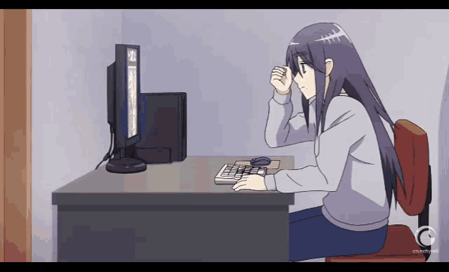

Ninoska Contreras
Desenvolvedora Web
Sobre Mim
Sou uma mulher curiosa e determinada. Adoro desafiar a forma tradicional de pensar, pois acredito que as soluções nem sempre devem ser as mesmas. Valorizo a lógica, questionar o porquê das coisas e buscar abordagens criativas para resolver problemas. Meu primeiro contato com o mundo da tecnologia ocorreu quando trabalhava como executiva de domínios web. Durante esse tempo, cercava-me de colegas de informática e minha curiosidade e paixão por esse campo despertaram. Desde então, a ideia de me formar nessa área nunca deixou de ocupar minha mente.
Estudei e concluí meus estudos na ElasNaTech 2023 adquirindo assim habilidades técnicas em JavaScript, HTML, CSS, Bootstrap e lógica de programação. Mas não só isso, também desenvolvi competências interpessoais como adaptabilidade, flexibilidade, trabalho em equipe e resolução de problemas. Gosto muito de estudar e aprender coisas novas, sei que ainda tenho muito que aprender, mas tenho certeza e convicção de que, com esforço e determinação, alcançarei todos os objetivos que me propus.
Além disso, gostaria de destacar que minha língua materna é o espanhol. Portanto, além de me dedicar ao aprendizado da programação, também estou me aprofundando no estudo do português, nesse belo país.
Jornada Elas Na Tech
Um dia, conferindo meu Instagram, notei que o Ja Brasil postou que as inscrições para o Elas na Tech estavam abertas, 20 semanas de conteúdo gratuito e online, adoro estudar e não pensei duas vezes para me inscrever.
Execute todos os passos e espere pacientemente até receber a tão esperada notícia
Sua inscri√ß√£o foi confirmada, seja bem-vindo ao Elas na Tech 2023 ü•Ç

Desafios
Programar é um desafio constante, pois exige aprendizagem e prática contínuas para consolidar os conhecimentos adquiridos. Durante a minha participação no ElasNaTech, enfrentei diversos desafios, dos quais os mais notáveis ​​foram:
- Gestão do tempo: Organizar-me e realizar todas as atividades propostas foi um grande desafio. A necessidade de equilibrar tempo entre estudos, projetos e outras responsabilidades exigiu um planejamento minucioso.
- Idioma: Também enfrentei desafios relacionados ao idioma, pois às vezes não conseguia compreender totalmente todos os conceitos e materiais apresentados. Isso me motivou a trabalhar para melhorar minha compreensão do idioma e a buscar recursos adicionais para esclarecer qualquer confusão.
No meu caminho para superar esses desafios, aprendi a importância da organização, da autodisciplina e da perseverança no mundo da programação. Esses obstáculos me motivaram a trabalhar ainda mais e a buscar soluções eficazes para avançar meu aprendizado e desenvolvimento nesta área emocionante.
Conquistas
Devo admitir que admiro a incrível capacidade do cérebro de absorver informações constantemente. Entre as minhas conquistas, posso destacar que aprendi a criar páginas web responsivas, desenvolvi fortes habilidades lógicas e adquiri a habilidade de criar sites. No entanto, a coisa mais importante que descobri é que tenho a capacidade de aprender tudo o que me proponho.

Aprendizado
Durante minha formação na Elas na Tech, posso afirmar que aprendi e reforcei os seguintes tópicos
- Gerenciar VSC
- Git
- Github
- Html
- Css
- Javascript
- Boostrap
- Lógica de programação
- Python
- Noções básicas de Internet
- Fundamentos de programação
Projetos
Nesta seção você poderá explorar alguns dos projetos que desenvolvi durante minha participação no Elas na Tech. Convido você a clicar nas imagens para acessar uma breve descrição de cada projeto, bem como encontrará uma link para GitHub que o levará para Saiba mais sobre cada repositório.
Clique nas fotos üòâ
Depoimento
Quero expressar minha profunda gratidão e satisfação por ter sido aceito neste programa. Não só tive a oportunidade de participar de aulas ao vivo, mas também de acessar cursos maravilhosos da IBM e da Udemy. Durante minha experiência no programa ElasNatech, tive o privilégio de conhecer mulheres extraordinárias: lutadoras e altamente talentosas. Tanto o Professor Gil quanto a Tutora Vanessa desempenharam papéis excepcionais como guias durante este emocionante processo de aprendizagem. Do ponto de vista técnico, aproveitei para mergulhar em diversos temas, alguns dos quais abordei do zero, como Python, enquanto outros aprimorei ainda mais, como JavaScript, HTML e CSS. Cada desafio que enfrentei revelou-se verdadeiramente fascinante. Gostaria de compartilhar um vídeo do projeto que mais gostei de criar, pois está relacionado a um dos meus filmes favoritos. Foi uma experiência maravilhosa poder combinar minhas paixões e criar algo tão especial.